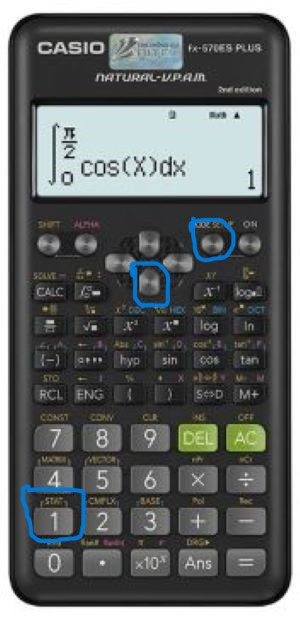

| Quảng cáo |

Đầu tiên, để tạo một bảng số liệu ghép nhớm, nhấn SHIFT -> MODE (SETUP) -> Nhấn xuống -> 4 để chọn vào STAT -> 1 để bật FREQUENCY
Muốn thực hiện các phép tính với mẫu số liệu, ta làm như sau:
Side note: nếu được thì nên bấm máy các bài độ lệch chuẩn để tránh tính sai Fact ko fun lắm: Casio-570 ko bấm đc phân vị :))))) Casio-580 thì đc (móa đúng pay to win) |
Quảng cáo |